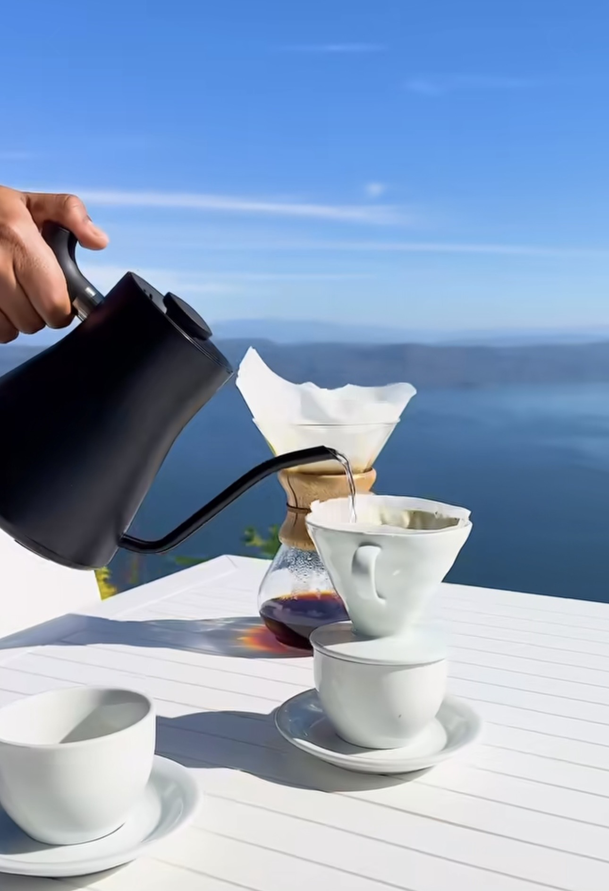
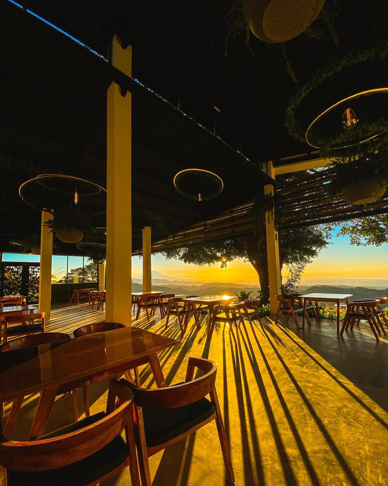
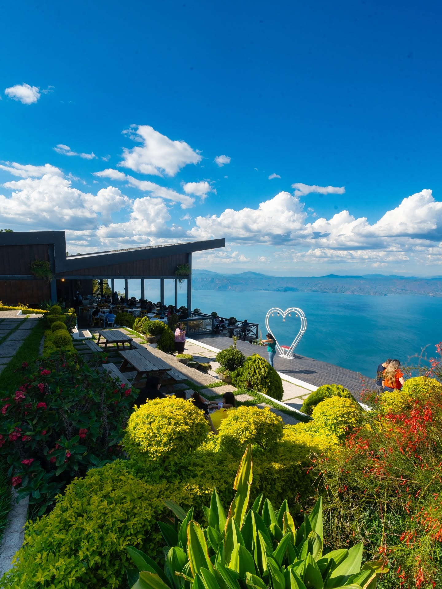
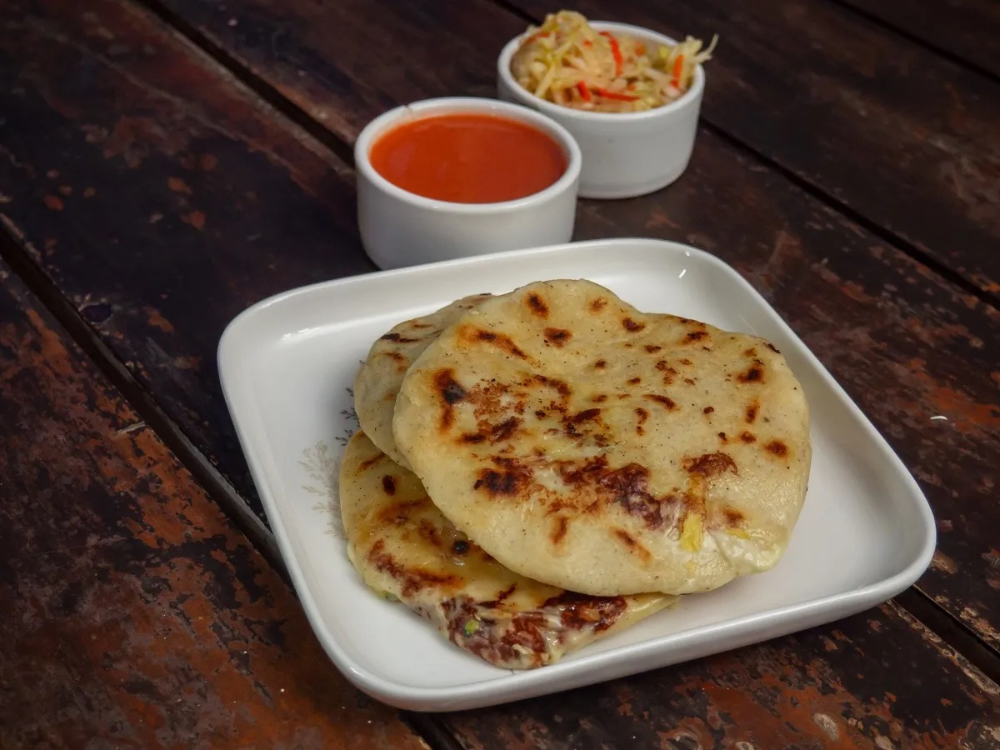

Café de olla y de especialidad
Café de olla con canela recién molido, además de preparaciones de especialidad con grano salvadoreño de altura.
Ruta Panorámica · La Paz, El Salvador
Café de especialidad, comida típica salvadoreña y un mirador que te deja sin aliento. A 30 minutos de San Salvador, en la Carretera Panorámica de San Francisco Chinameca — el lugar perfecto para ver el atardecer con una taza en la mano.


Café Santa Cruz nació como un proyecto familiar para resaltar el grano salvadoreño desde lo alto de la Carretera Panorámica. Aquí, cada taza se sirve con la mejor vista del Lago de Ilopango y el sonido del viento entre las montañas.
Combinamos café de especialidad con la comida típica que nos recuerda a casa: pupusas, ceviche, carnes a la parrilla y postres artesanales. Y nuestra horchata de morro — dicen que es la mejor de El Salvador.
"Café de altura, sabor de casa."
Tres razones para subir hasta Santa Cruz — y quedarte hasta el atardecer.

Café de olla con canela recién molido, además de preparaciones de especialidad con grano salvadoreño de altura.

Pupusas, ceviche, churrasco, costilla BBQ y New York steak. Postres artesanales como el tres leches de horchata y el love cake.

Terrazas en varios niveles con vista abierta al lago. Ideal para desayunar, almorzar o ver el atardecer con una sangría.
Los favoritos de quienes suben a visitarnos. Pregunta por ellos cuando llegues.

La mejor de El Salvador, según nuestros visitantes. Fría, cremosa y con ese toque de cacao y especias.

Con canela, preparado en olla de barro.

Hechas a mano al momento, como debe ser

Postre estrella: el clásico tres leches con un giro de horchata salvadoreña. Pídelo con café.
Llega entre 4:00 y 5:00 p.m. para conseguir mesa con vista. Estamos en el Km 24 de la Carretera Panorámica de San Francisco Chinameca. Abierto toda la semana.
Cómo llegar